１．インストーラーをダウンロードします。
以下のコマンドを入力します。
$ git clone git://github.com/LAPIS-Lazurite/LazuriteInstaller
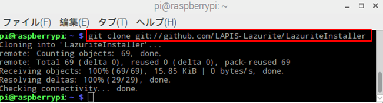
２．Raspberry Piの設定
以下のコマンドを入力します。
$ cd LazuriteInstaller
$ ./setup.sh
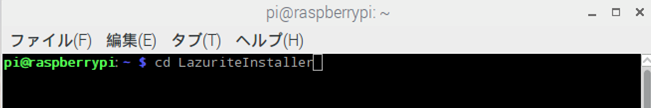
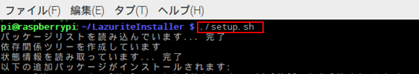
下図は完了後の画面です。完了後に再起動して下さい。
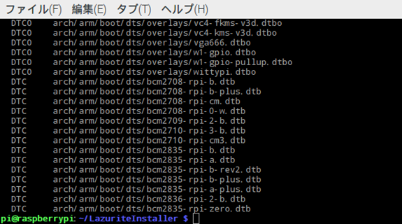
再起動後、以下のコマンドを入力して下さい。
$ cd LazuriteInstaller
$ ./install.sh
Lazuriteのライブラリを使用しますので、あらかじめこちらの作業を完了しておいてください。
1. 一度もNode-REDを起動したことが無い場合は、一度Node-REDを起動してください。
$ node-red
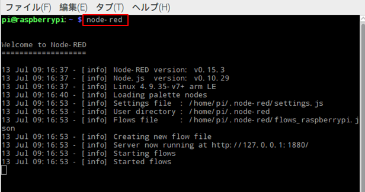
起動したら、Ctrl-CでNode-REDを終了します。
2.Node-REDのフォルダが作られていることを確認してください。
$ cd ~/.node-red
$ ls
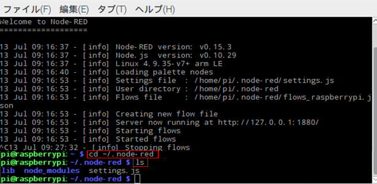
3. Node-RED用ライブラリのインストール
3-1. npmパッケージインストール
$ npm install node-red-contrib-lazurite
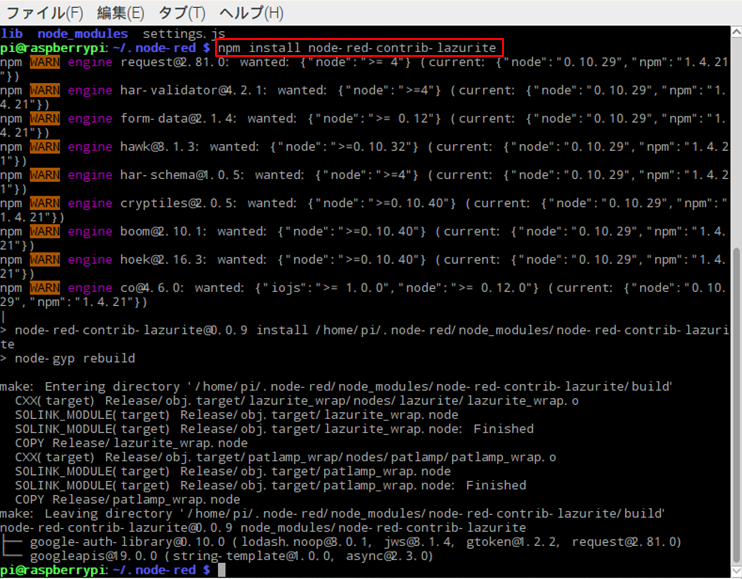
3-2. githubからインストール
$ cd ~/.node-red/node_modules
$ git clone git://github.com/LAPIS-Lazurite/node-red-contrib-lazurite
$ cd node-red-contrib-lazurite
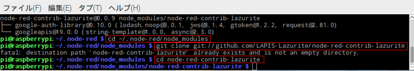
$ node-gyp rebuild
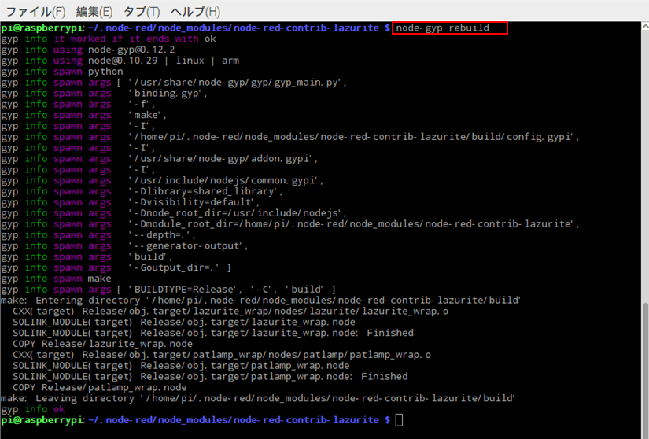
補足: npmとnode-gypでエラーが発生する場合はソフトウエアのインストールを行ってください。
$ sudo apt-get install -y npm node-gyp
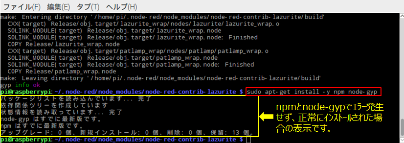
2. サンプルプログラムを作る
1. サンプルプログラムを使用するために必要なnod-red-dashboardのインストール
$ cd ~/.node-red
$ npm install node-red-contrib-lazurite
2. Node-REDを起動する
$ node-red
3. Raspberry Piでブラウザ起動して、アドレスに「http://localhost:1880」を入力してください。
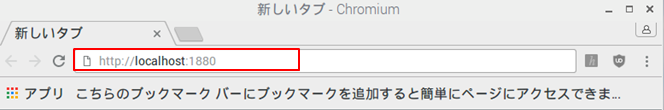
4. Lazuriteのパッケージがインストールされている事を確認します。
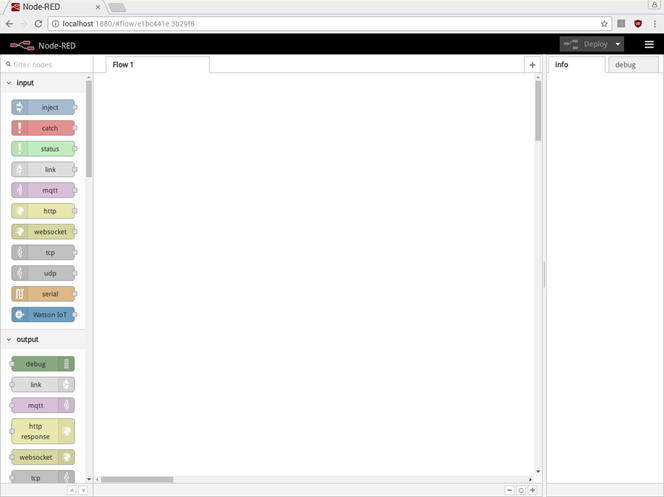